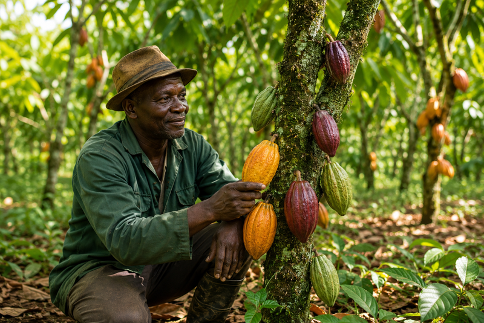

Bonjour 👋 Comment puis-je vous aider sur votre cacao ?
Posez votre question en français. Je m'appuie sur les sources officielles de la filière (CNRA, ANADER, Conseil du Café-Cacao, FAO) et j'oriente vers votre agent ANADER quand c'est nécessaire.